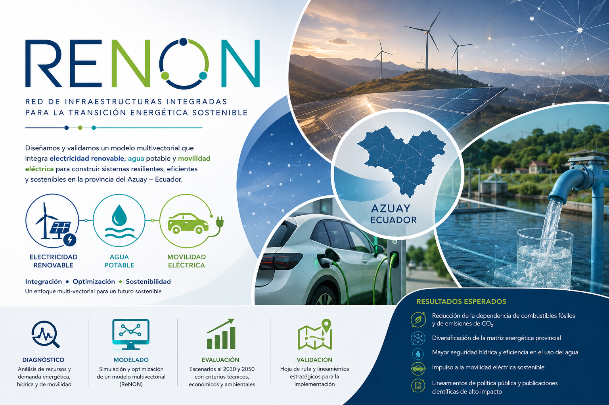
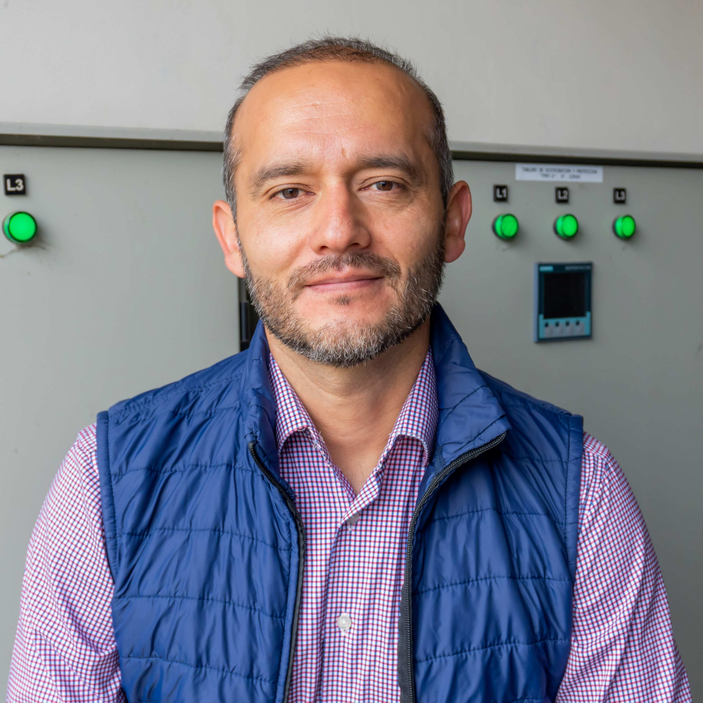

Un enfoque multi-vectorial (ReNoN) para la gestión de electricidad renovable, agua potable y movilidad eléctrica en la provincia del Azuay.
Ver proyecto GitHub →Diseñamos y validamos un modelo multivectorial que integra electricidad renovable, agua potable y movilidad eléctrica para construir sistemas resilientes y sostenibles en el Azuay.

ReNoN (Renewable Network of Networks) es un marco cooperativo que integra múltiples redes energéticas en un sistema resiliente y optimizado.
Ecuador enfrenta una dependencia superior al 90 % de derivados del petróleo en el transporte y una alta vulnerabilidad hidroeléctrica frente a sequías, agravadas por el cambio climático.
La provincia del Azuay es el escenario idóneo para diseñar, simular y validar modelos de integración energética multivectorial: combina recursos hídricos, potencial solar y eólico, crecimiento urbano acelerado (Cuenca) y zonas rurales con características contrastantes.
Este proyecto desarrolla y valida el modelo ReNoN para Azuay, integrando redes de electricidad renovable, agua potable y movilidad eléctrica mediante algoritmos de optimización metaheurística, con horizontes de planificación a 2030 y 2050.
Recopilación de datos históricos, identificación de vulnerabilidades, construcción de líneas base y talleres participativos con actores locales.
Formulación del modelo multivectorial, desarrollo del EMS con algoritmos de optimización y redefinición de KPIs validados por stakeholders.
Simulación de escenarios urbanos y rurales con horizontes 2030 y 2050. Análisis de políticas de transición y comparación con planificación tradicional.
Validación del modelo con casos internacionales (Dinamarca, Alemania, Italia), discusión con actores locales y elaboración de lineamientos técnicos y políticos.
Las actividades científicas iniciaron en julio 2026 tras la conformación del equipo. El proyecto opera con metodología Scrumban — sprints mensuales con sincronías semanales. Sprints 1 y 2 completados; el Sprint 3 cierra la fase de diagnóstico (PT1).
renon-azuay con estructura de carpetas
TINV
Completado
Equipo del Departamento de Ingeniería Eléctrica, Electrónica y Telecomunicaciones (DEET) de la Universidad de Cuenca.

Colaboradores anteriores: Pablo Cárdenas Regalado, ayudante de investigación (marzo – agosto 2026), participó en la configuración inicial del repositorio y la recopilación de datos de PT1.
Los resultados del proyecto se publican como reportes de acceso abierto. Se actualizarán a medida que avance la investigación.
Diseño, implementación en MATLAB y primeros resultados de simulación del modelo ReNoN (electricidad renovable, agua potable y movilidad eléctrica) con EMS horario y optimización NSGA-II. Frentes de Pareto 2030 y 2050, prueba de estrés por sequía y análisis Monte Carlo.
Versión definitiva prevista al cierre del Sprint 3 (30 de septiembre de 2026).
Producción científica del equipo asociada al proyecto. Los dos artículos comprometidos como entregables de PT3 se prevén para 2027.
M. Ortega Ortega, L. I. Minchala, P. Arévalo Cordero. Diagnóstico de la generación eléctrica ecuatoriana 2003–2024: vulnerabilidades estructurales, dependencia de combustibles y estimación de emisiones de CO₂, CH₄ y N₂O según directrices IPCC 2006. Base cuantitativa de la Act. 1.2 (identificación de vulnerabilidades).
B. Loza, J. Pacheco-Chérrez, L. I. Minchala. Capítulo de revisión sobre gemelos digitales de conversión eólica, fotovoltaica, almacenamiento y electrónica de potencia en microrredes inteligentes. Aporta al estado del arte del modelado de la red eléctrica renovable (Act. 2.1).
Simulación de escenarios urbanos y rurales con el modelo de red de redes de energías renovables.
Análisis comparativo de políticas de transición y su impacto en seguridad energética y sostenibilidad ambiental.
Documento de divulgación técnica comparando el modelo ReNoN-Azuay con experiencias en Dinamarca, Alemania e Italia.
Para consultas sobre el proyecto, colaboraciones o acceso a datos: